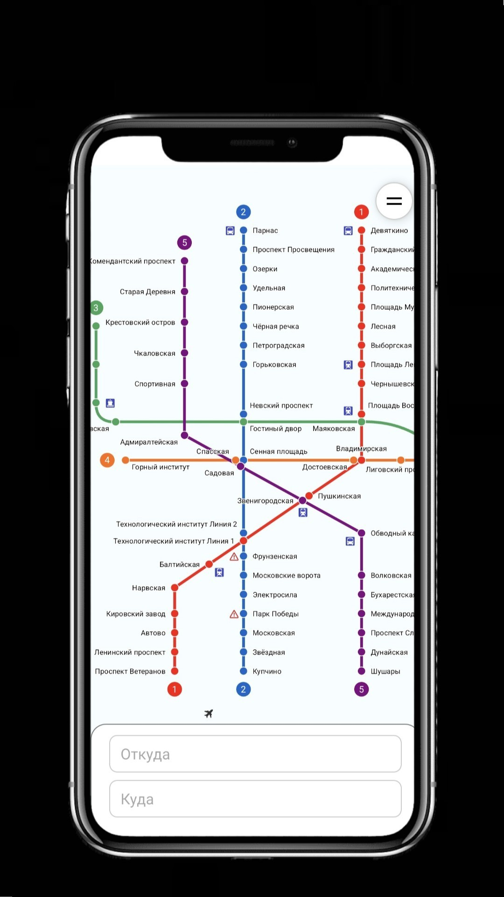
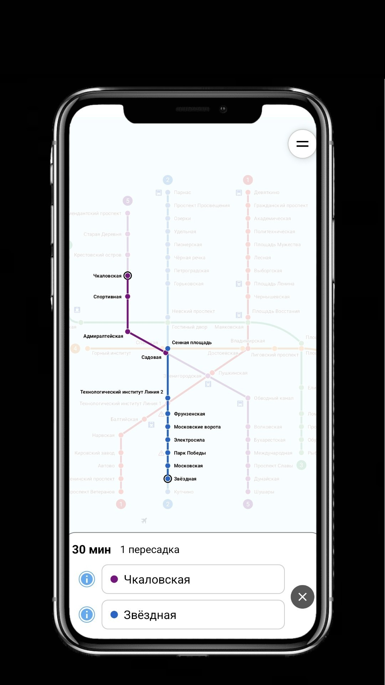
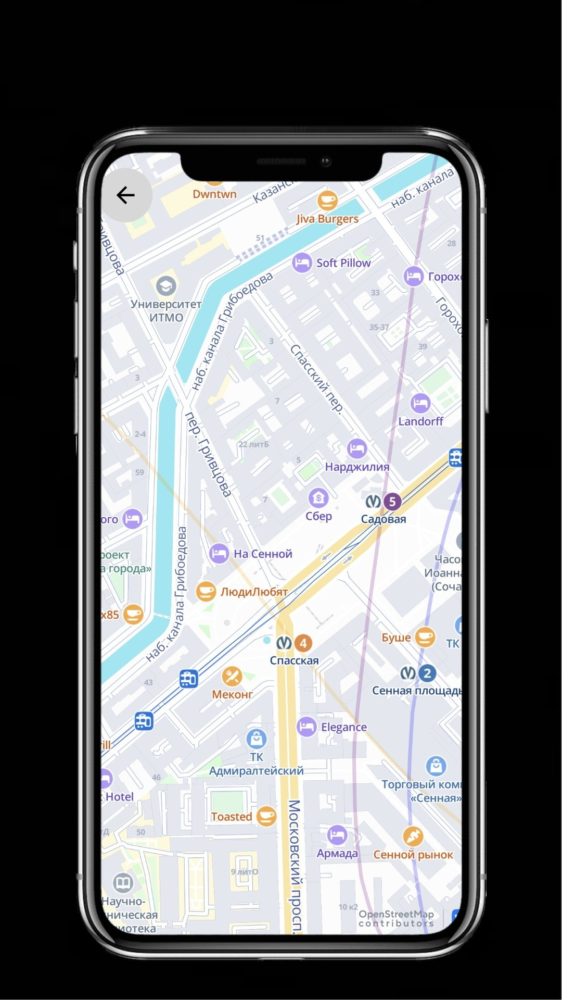
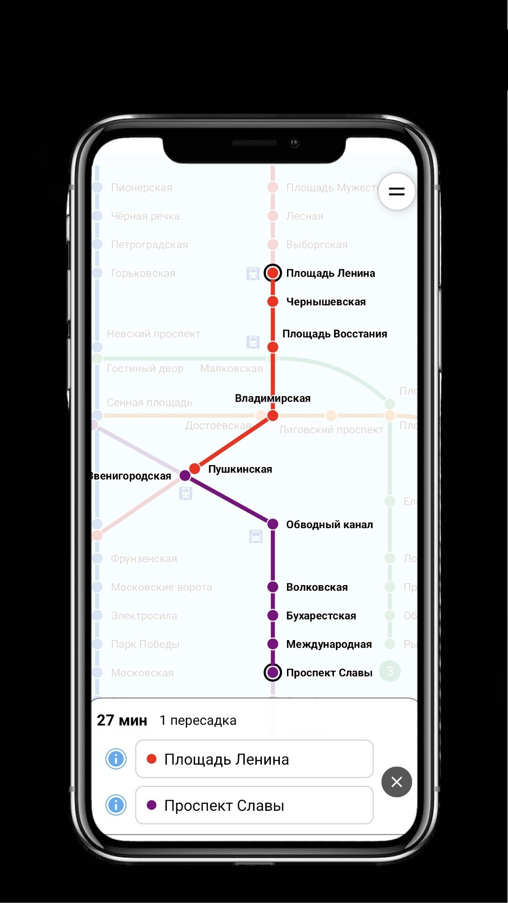
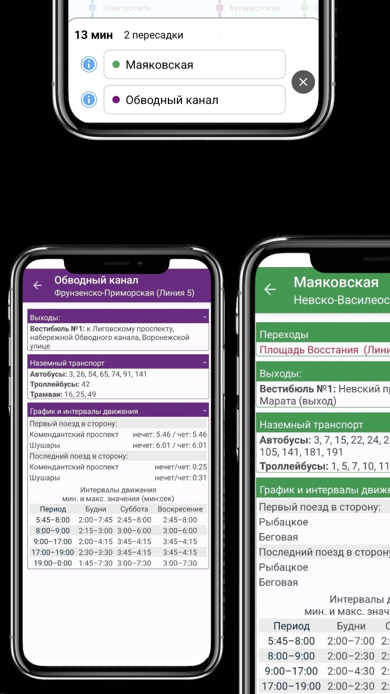

Умная интерактивная карта метро, которая работает офлайн. Маршруты, станции, достопримечательности — всё в вашем телефоне.
Полностью бесплатно · Без интернета · 10 МБ

Скриншот приложения
Чёткая, масштабируемая карта с цветными линиями, пересадками и вокзалами.
Оптимальный путь, время в пути и количество пересадок.
Время работы, выходы, пересадки, интервалы движения поездов.
Достопримечательности Петербурга у каждой станции метро.
Мгновенно находите нужную станцию по названию.
Временное закрытие станций отображается на карте.
Просто. Быстро. Удобно.




Установите карту метро СПб и путешествуйте без стресса
Всего 10 МБ — установка за секунды